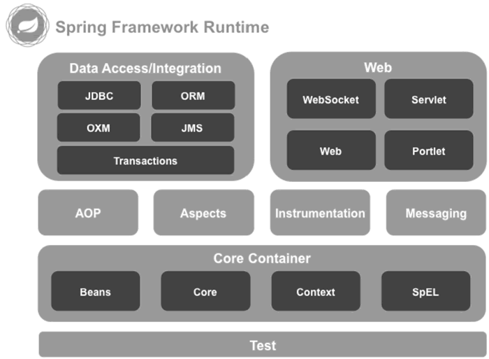

首页 > 编程笔记
Spring框架介绍（非常详细）
Spring 是一个著名的开源 Java 框架，是由 Rod Johnson 根据其著作 Expert One-On-One J2EE Development and Design 中阐述的设计理念和原型在 2003 年用 Java 开发实现出来的。
Spring 的核心理念是控制反转（Inversion of Control，IoC）和依赖注入（Dependency Injection，DI）。Spring 是为了解决企业级应用开发的复杂性而创建的框架，其优势是分层架构。
Spring 允许开发者根据项目的实际情况决定使用哪一个组件，同时为企业级应用程序的开发提供集成的基础框架，通过使用 Spring 内置的 Java Bean 来完成以前只可能由 EJB 完成的功能，这极大地简化了项目开发的复杂性。
Spring 的用途不局限于服务器端的开发，从 Spring 实现的简单性、可测试性和松耦合的角度出发，任何 Java 应用都可以从 Spring 的设计理念中受益。
Spring 的主要功能模块如下图所示：
Spring 的模块很多，笔者只简要介绍图 1 中的几个重要模块：
使用 Spring 能加快项目的开发速度，能使业务代码逻辑更加清晰，也能让开发人员更关注业务的开发。简单来说，在项目中使用 Spring 具有以下 7 个优点：
常见的框架如下：
Spring 的核心理念是控制反转（Inversion of Control，IoC）和依赖注入（Dependency Injection，DI）。Spring 是为了解决企业级应用开发的复杂性而创建的框架，其优势是分层架构。
Spring 允许开发者根据项目的实际情况决定使用哪一个组件，同时为企业级应用程序的开发提供集成的基础框架，通过使用 Spring 内置的 Java Bean 来完成以前只可能由 EJB 完成的功能，这极大地简化了项目开发的复杂性。
Spring 的用途不局限于服务器端的开发，从 Spring 实现的简单性、可测试性和松耦合的角度出发，任何 Java 应用都可以从 Spring 的设计理念中受益。
Spring的功能模块
Spring 是一个典型的分层架构框架，它包含一系列的功能并被分为多个功能模块，如 Core Container、Data Access/Integration、Web、AOP（Aspect Oriented Programming）、Instrumentation 和 Test 等。Spring 的主要功能模块如下图所示：

图 1 Spring的主要功能模块
图 1 Spring的主要功能模块
Spring 的模块很多，笔者只简要介绍图 1 中的几个重要模块：
- Core 模块：Spring 框架的基本组成部分，它包括控制反转及依赖注入功能。
- Beans 模块：实现 Spring 对 Bean 的管理，包括自动装配机制等功能。
- Context 模块：用于访问项目配置及自定义对象，ApplicationContext 接口是 Context 模块最重要的接口。
- SpEL 模块（Spring Expression Language，表达式语言模块）：提供在运行时查询和操作一个对象的表达式机制。
- JDBC 模块：用于实现 JDBC API 的抽象层。
- ORM 模块：对象关系数据库映射抽象层，基于该模块，Spring 框架可以方便地集成 Hibernate 和 MyBatis。
- OXM 模块（XML消息绑定抽象层）：基于该模块，使 Spring 框架能够支持 JAXB、Castor、XMLBeans、JiBX 和 XStream。
- JMS 模块：Spring 支持 Java 消息服务的重要模块，集成了 JMS 的项目即可实现消息生产和消费的功能。
- Transactions 模块：Spring 的事务模块，Spring 框架支持编程式和声明式的事务管理。
- Web 模块：即 Spring MVC，提供了基于“模型-视图-控制器”的基础 Web 应用框架，可替代 Struts 2。
- Servlet 模块：实现统一的监听器和面向 Web 应用的上下文，用以初始化 IoC 容器。
- AOP 模块：用于 Spring 面向切面的编程实现。
- Aspects 模块：Spring 与 AspectJ 的集成，可以使用 AspectJ 来实现面向切面编程。
- Test 测试模块：支持 JUnit 和 TestNG 单元框架的集成，可以快速开展业务代码的单元测试。
Spring的7大优点
Spring 是一个在企业级开发中使用非常成熟的框架，有些开发人员甚至认为离开了 Spring 就不能很好地完成项目的开发。这种说法虽然有些夸张，但也说明它在开发中的广泛应用。使用 Spring 能加快项目的开发速度，能使业务代码逻辑更加清晰，也能让开发人员更关注业务的开发。简单来说，在项目中使用 Spring 具有以下 7 个优点：
- 非侵入式：基于 Spring 开发的应用的对象可以不依赖于 Spring 的 API。
- 控制反转：IoC，指将对象的创建和管理交给 Spring，只需要进行对象的注入即可，不用担心对象的创建和值的设置。
- 依赖注入：DI，配置后由 Spring 给属性赋值，而不需要再手动调用 set 方法给属性赋值。
- 面向切面编程（AOP）：更加简单和高效地完成日志记录、权限判定及事务处理等功能。
- 容器化：Spring 就是一个容器，用于管理应用对象的整个生命周期。
- 功能组件化：使用 Spring 框架，能快速集成第三方的组件，从而组合成一个复杂的应用，并且可以插拔式选择不同的组件。
- 一站式开发：在 Spring 的基础上可以方便地整合第三方类库到项目中。
Spring的生态圈
Spring 是一个基础框架，随着它的广泛应用又衍生出了很多其他框架，它们都有各自的功能，又能与 Spring 非常方便地集成，集成后能满足项目的各种业务需求，这极大提高了项目开发的效率。常见的框架如下：
- Spring Boot：能够让开发者轻松地创建独立的基于 Spring 的生产级应用程序的框架，这也是本书的重点。
- Spring Cloud：帮开发者快速构建一个分布式系统的框架。
- Spring Data：为数据库的访问提供一个一致的基于 Spring 的编程模型，保留底层数据存储的框架。
- Spring Cloud Data Flow：面向云计算和 Kubernetes 的基于微服务的流和数据批处理处理框架。
- Spring Security：一个功能强大且高度可定制的身份验证和访问控制的安全框架。
- Spring Session：在 Web 应用中管理用户会话信息的框架。
- Spring AMQP：基于 Spring 框架的 AMQP 消息解决方案，该框架为消息的发送和接收提供一个模板方法。
- Spring Web Service：该框架用于创建文档驱动的 Web 服务。
关注公众号「站长严长生」，在手机上阅读所有教程，随时随地都能学习。内含一款搜索神器，免费下载全网书籍和视频。

微信扫码关注公众号